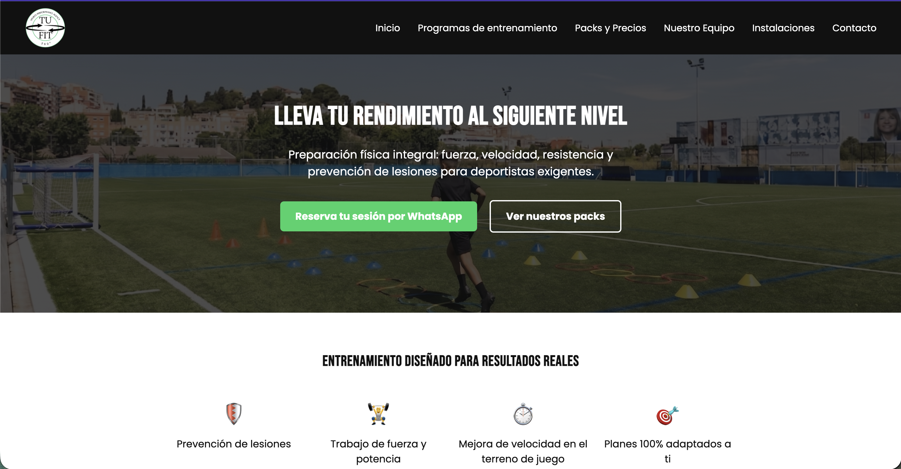

TuFit 360 - Plataforma de Entrenamiento
Aplicación web Full-Stack para un servicio de preparación física deportiva. Cuenta con carga dinámica de contenido, integración de base de datos para gestionar sesiones y entrenadores, y un diseño responsive maquetado desde cero.